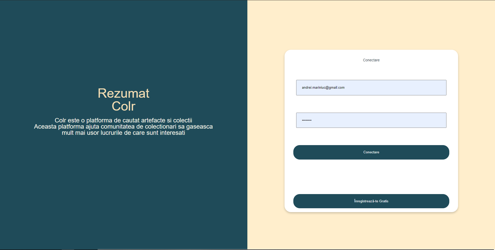
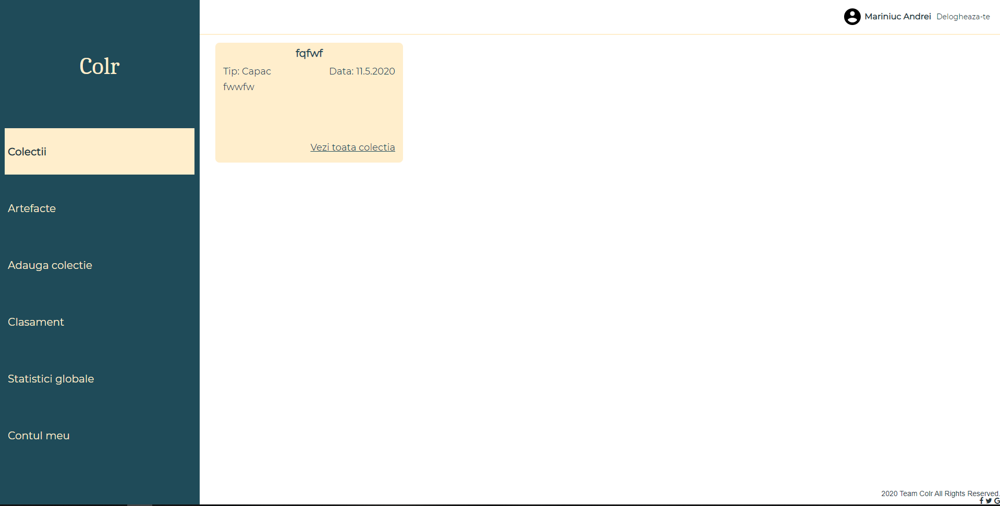
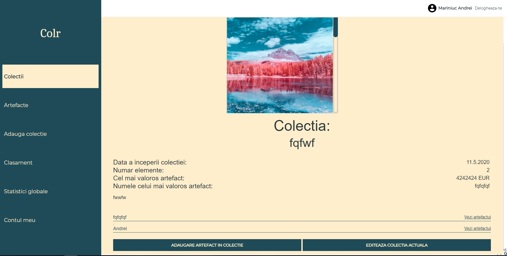
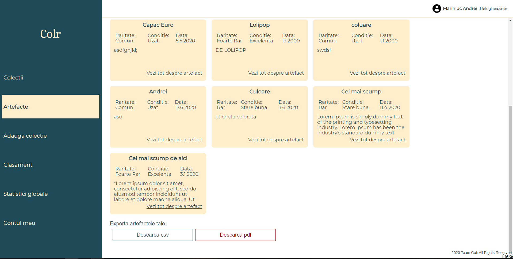
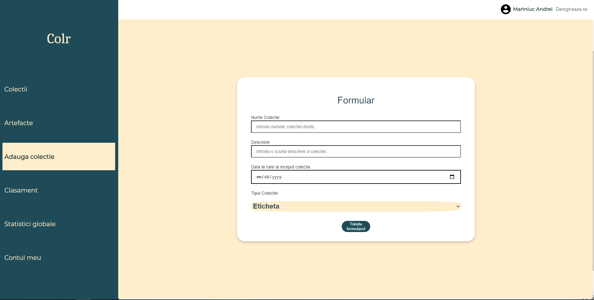
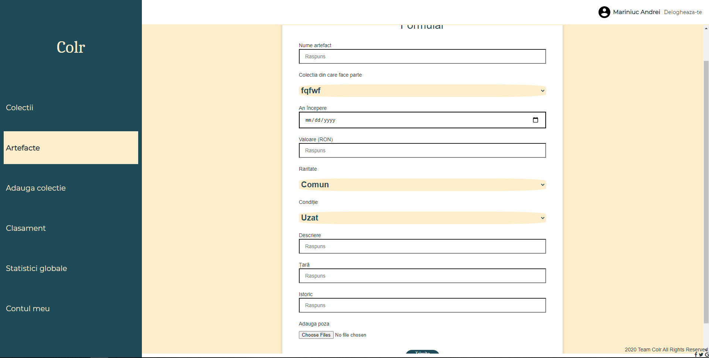
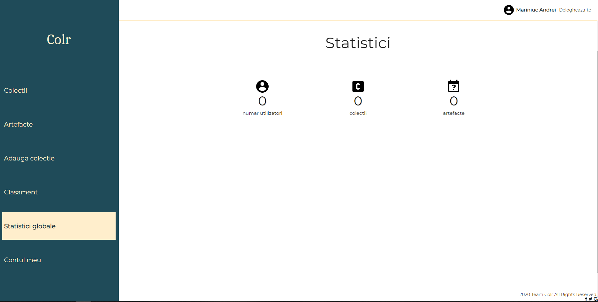
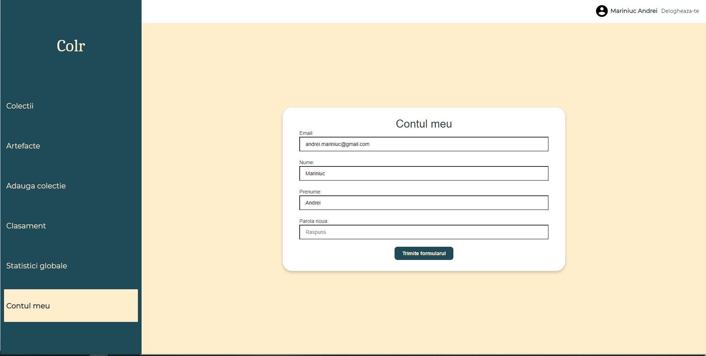

Autori
Zănceanu Robert & Căluțu Maria & Mariniuc Andrei
1. Conectare/Inregistrare
La prima interactiune cu aplicatia, se va deschide pagina de conectare
Aici utilizatorul poate sa se autentifice in aplicatie daca are un cont valid sau poate alege sa isi creeze un cont nou apasand pe butonul de Inregistrare.
2. Colectii
Dupa conectarea la aplicatie, utilizatorul este directionat catre pagina de colectii, pagina unde acesta poate vizualiza toate colectiile personale.
Fiecare colectie are cate o pagina dedicata unde utilizatorul poate vedea toate informatiile despre colectia respectiva. De asemenea, pe aceasta pagina se poate alege sa se adauge un nou artefact in colectie sau sa se editeze informatiile acesteia.
3. Artefacte
Pagina dedicata artefactelor este structurata similiar cu cea dedicata colectiilor. Diferenta dintre cele 2 pagini este aceea ca in pagina artefactelor poti exporta datele artefactelor adaugate de catre tine.
4. Adaugare colectie/artefact
Aceste doua pagini contin cate un formular, care odata completat si trimis adauga colectia/artefactul in baza de date.
 5. Clasament
Utilizatorii pot accesa aceasta pagina pentru a vedea un clasament al artefactelor pe baza aprecierilor primite de la toti utilizatorii aplicatiei.
6. Statistici globale
In aceasta pagina utilizatorii pot vedea diverse statistici, cum ar fi: numarul total de utilizatori ai aplicatiei, numarul de colectii adaugate si numarul de artefacte adaugate.
7. Contul meu
In pagina "Contul meu" utilizatorii isi pot modifica parola contului ori de cate ori isi doresc.
